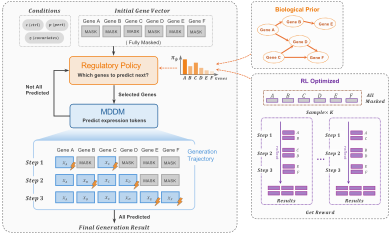
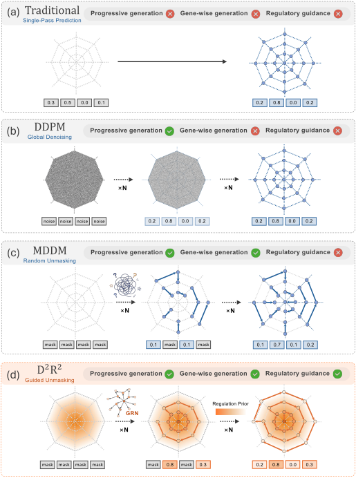
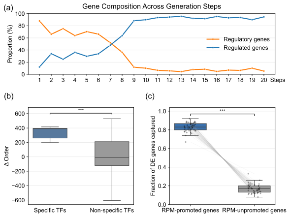

Perturbation prediction as regulation-guided, gene-wise progressive generation.
A masked discrete diffusion model reconstructs a fully masked expression profile step by step, so already-generated genes condition those still masked. A regulatory policy, initialized from a gene regulatory network inferred from control cells and refined with GRPO, decides which genes to resolve at each step.
Regulation-guided generationIllustrative
Step 0 / 0
Masked geneExpression token (low → high bin)Selected by RPM this stepRegulatory gene (has an outgoing edge in the GRN)
Schematic illustration with 16 genes, 6 steps and 5 bins. In the paper, D2R2 generates 1,000 genes in 20 steps of 50 genes each, with 50 expression bins.
Framework
Existing approaches mostly generate at the level of the whole expression profile: single-pass models output it at once, and diffusion models iteratively denoise the entire profile. In both cases the gene-wise generation order remains unmodeled.
D2R2 makes that order explicit: already-generated genes become context for the ones still masked, and a learned policy decides which genes to generate next.

Overview. Left: the iterative generation loop. After MDDM predicts the selected expression tokens, RPM observes the updated partial state and recomputes which genes should be resolved next. Upper right: the biological prior used to initialize the policy. Lower right: GRPO, which optimizes the order for each perturbation.
Click a component to highlight it in the figure; click it again to show everything.
Generator
Masked Discrete Diffusion Model
Each expression value is mapped to an ordinal token by equal-frequency binning. A non-causal Transformer, conditioned on the control profile, the perturbation and covariates, is trained to reconstruct randomly masked tokens. At inference it starts from a fully masked profile; at each step the tokens of the selected genes are committed, stay fixed, and condition the genes still masked.
Ordering policy
Regulatory Policy Module
At every step RPM assigns an unmasking priority to each still-masked gene from the partial profile, the perturbation and covariates. The top-ranked genes are resolved next.
Initialize from a biological prior: a cell-type-specific GRN inferred from unperturbed control cells with DeepSEM, ranked by PageRank so influential upstream regulators come first.
Refine with GRPO while MDDM and the prior stay frozen. The reward is perturbation-effect agreement corr(ŷ − c, y − c), which turns the static prior into a state- and perturbation-specific order.
Paradigm comparison · single-pass vs. DDPM vs. MDDM vs. D2R2

Paradigm comparison. Traditional single-pass prediction, DDPM-based global denoising, and two forms of D2R2: random unmasking (MDDM) and regulation-guided unmasking.
Results
D2R2 ranks first on all five metrics on Norman19 (K562, held-out combinations). On VCC-H1 (H1 hESC, held-out cells) it leads all three differential-expression metrics and remains competitive on absolute expression.
Main results
Mean ± std over five independent training runs (seeds 0, 1, 2, 3, 42). For D2R2, the MDDM checkpoint is fixed and RPM is trained independently for each seed. Bold: best, underline: second best. ↑ higher is better, ↓ lower is better.
Generation order matters
Every order uses the same frozen MDDM and the same 20-step generation budget; only the genes selected at each step change. Uncertainty-based orders improve some metrics at a substantial cost on others. The biological prior improves most metrics over random order, while reversing it drops every metric below random. Initialized from the prior, RPM improves all three perturbation-effect metrics over the fixed prior, with modest trade-offs in centroid- and population-level agreement.
Relative change vs. Random (averaged over multiple random orders) on Norman19. Positive is always better; for ↓ metrics it is the relative error reduction.
Show as table
What the learned order captures
RPM keeps regulatory genes early in generation, moves perturbation-specific transcription factors earlier than the prior does, and the genes it promotes capture most perturbation-specific DE genes.

(a) Proportions of regulatory and regulated genes across generation steps under the RPM-refined order. (b) ΔOrder (prior rank − RPM rank; positive = generated earlier by RPM) for perturbation-specific vs. non-specific TFs, Mann-Whitney U test, P = 1.6 × 10−15. (c) Fraction of DE genes that are RPM-promoted vs. unpromoted, one dot per perturbation, paired Wilcoxon test, P = 1.7 × 10−9.
BibTeX
@article{fan2026d2r2,
title = {D$^2$R$^2$: Discrete Diffusion with Regulation Reinforcement
for Single-Cell Perturbation Prediction},
author = {Fan, Ninghan and Liu, Qi and Zhu, Xunuo and Sun, Yukai and
Chen, Luyuan and Zhou, Xuheng and Du, Yuetian and Kong, Ming and
Zhu, Xiaojun and Liu, Jie and Zhou, Zhan and Zhu, Qiang},
journal = {arXiv preprint arXiv:2608.15288},
year = {2026}
}